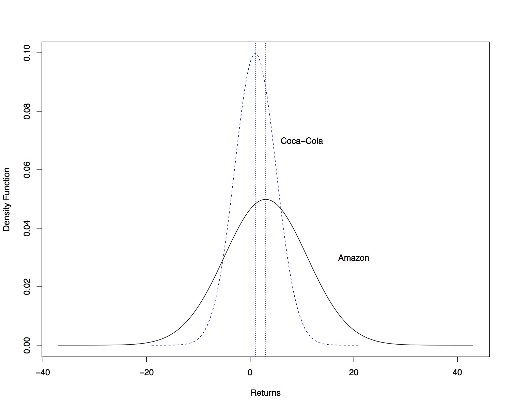
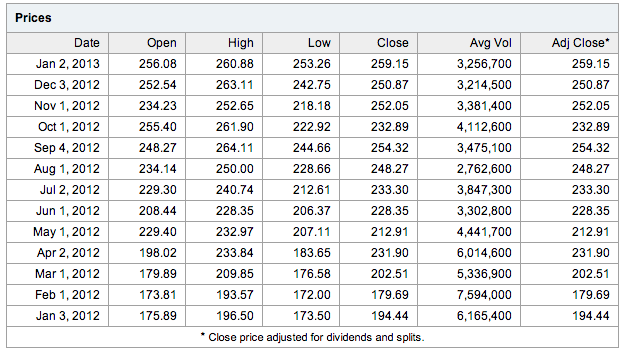
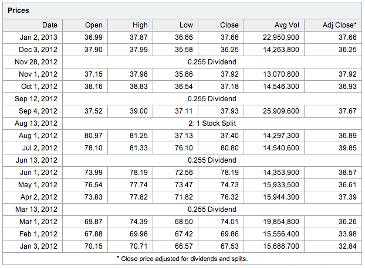
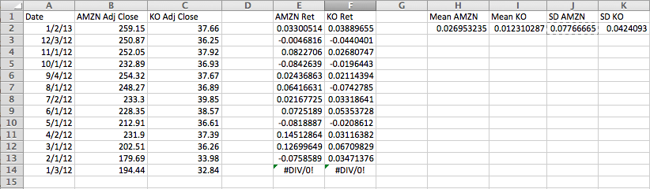

Risk and Risk Premiums
Probabilistic Returns
Since we don’t know future returns, we will treat them as random
variables.
- We can model them as discrete random variables, taking one of a
finite set of possible values in the future: \(r(s)\), \(s
= 1, \ldots, S\).
- In this case the probability of each value is \(p(s)\),
\(s=1,\ldots,S\).
- We can model them as continuous random variables, taking one of an
infinite set of possible values in the future: \(r(s)\),
\(s \in \mathcal{S}\) (e.g. \(\mathcal{S} = (-\infty, \infty)\)).
- In this case the probability of each value (kind of) is
\(f(s)\), \(s \in \mathcal{S}\).
Expected Returns
Our best guess for the future return is the expected value:
\[\begin{split}E[r] & \equiv \mu = \sum_{s=1}^S r(s) p(s),\end{split}\]
or
\[\begin{split}E[r] & \equiv \mu = \int_{s \in \mathcal{S}} r(s) f(s) dr(s).\end{split}\]
Return Volatility
The amount of uncertainty in potential returns can be measured by the
variance or standard deviation.
- Volatility of returns specifically refers to standard deviation, NOT
VARIANCE.
\[\begin{split}Std(r) & \equiv \sigma = \sqrt{\sum_{s=1}^S (r(s) - \mu)^2 p(s)},\end{split}\]
or
\[\begin{split}Std(r) & \equiv \sigma = \sqrt{\int_{s \in \mathcal{S}} (r(s) -
\mu_r)^2 f(s) dr(s)}.\end{split}\]
Expectation and Variance Example
| State |
Probability |
Return |
|---|
| Severe Recession |
0.05 |
-0.37 |
| Mild Recession |
0.25 |
-0.11 |
| Normal Growth |
0.40 |
0.14 |
| Boom |
0.30 |
0.30 |
What are \(\mu\) and \(\sigma\)?
\[\begin{split}\mu & = 0.05*(-0.37) + 0.25*(-0.11) \\
& \qquad \qquad + 0.40*0.14 + 0.30*0.30 = 0.10\end{split}\]
\[\begin{split}E[r^2] & = 0.05*(-0.37)^2 + 0.25*(-0.11)^2 \\
& \qquad \qquad + 0.40*(0.14)^2 + 0.30*(0.30)^2 = 0.04471\end{split}\]
\[\begin{split}\sigma & = \sqrt{E[r^2] - \mu^2} = 0.04471 - 0.10^2 = 0.03471\end{split}\]
Assumption of Normality
It will often be convenient to assume asset returns are normally
distributed.
- In this case, we will treat returns as continuous random variables.
- We can use the normal density function to compute probabilities of
possible events.
- We will not assume that returns of different assets come from the
same normal, but instead FROM DIFFERENT normal distributions.
Differing Normal Distributions
As an example, suppose that
- Amazon stock (AMZN) has an expected monthly return of 3% and a
volatility (standard deviation) of 8%.
- Coca-Cola stock (KO) has an expected monthly return of 1% and a
volatility (standard deviation) of 4%.
What do their probability distributions look like?
Coca-Cola Distribution

Implications of Normality
The assumption of normality is convenient because
- If we form a portfolio of assets that are normally distributed, then
the distribution of the portfolio return is also normally
distributed.
- Recall that if \(X_i \sim \mathcal{N}(\mu_i, \sigma_i)\),
\(i = 1,\ldots,N\), then \(W = \sum_{i=1}^N w_i X_i\) is
also normally distributed (where \(w_i\) are constant
weights).
- The mean and the variance (or standard deviation) fully characterize
the distribution of returns.
- The variance or standard deviation alone is an appropriate measure
of risk (no other measure is needed).
Estimating Means and Volatilities
Typically we don’t know the true mean and standard deviation of Amazon
and Coca-Cola. What do we do?
- Use historical data to estimate them.
- Collect \(N+1\) past prices of each asset for a particular
interval of time (daily, monthly, quarterly, annually).
- Compute \(N\) returns using the formula
\[\begin{split}r_t & = \frac{P_t - P_{t-1}}{P_{t-1}}.\end{split}\]
We don’t include dividends in the return calculation above, because we
use ADJUSTED closing prices, which account for dividend payments
directly in the prices.
Estimating Means and Volatilities
Compute the sample mean of returns
\[\begin{split}\hat{\mu} & = \frac{1}{N} \sum_{t=1}^N r_t.\end{split}\]
Compute the sample standard deviation of returns
\[\begin{split}\hat{\sigma}^2 & = \frac{1}{N-1} \sum_{t=1}^N (r_t -
\hat{\mu})^2.\end{split}\]
The “hats” indicate that we have estimated \(\mu\) and
\(\sigma\): these are not the true, unknown values.
Estimating Means and Volatilities - Example
Let’s collect the \(N = 13\) closing prices for Amazon and
Coca-Cola between 3 Jan 2012 and 2 Jan 2013.
- We will only keep the first closing price on the first trading day
of each month.
- We can then compute 12 monthly returns by computing the difference
in month prices at the beginning of each month, dividing by the
price of the previous month.
- This will give us 12 returns that we can use to estimate the means
and standard deviations.
Amazon Monthly Prices

Coca-Cola Monthly Prices

Computing Returns and Moments

Risk-Free Returns
We will typically assume that a risk-free asset is available for
purchase.
- We will denote the risk-free return as \(r_f\).
- If an asset is risk free, its return is certain and has no
variability:
\[\begin{split}E[r_f] & = r_f \\
Var(r_f) & = 0.\end{split}\]
T-Bills as Risk-Free Assets
The return on a short-term government t-bill is usually considered
risk free:
- Although the price changes over time, the risk of default is
extremely low.
- Also, the holding period return can be determined at the beginning
of the holding period (unlike other risky assets).
Compensation for Risk
If you can invest in a risk-free asset, why would you purchase a
risky asset instead?
- Risky assets compensate for risk through higher expected
return.
- If risky assets didn’t offer higher expected return, everyone would
sell them, leading to a price decline today and a higher expected
return:
\[\begin{split}\uparrow E[r_t] & = \frac{E[P_t] - \downarrow
P_{t-1}}{\downarrow P_{t-1}}\end{split}\]
- There is no guarantee that the actual return will be higher – only
its expected value.
Risk Premium & Excess Returns
The amount by which the expected return of some risky asset \(A\)
exceeds the risk-free return is known as the risk premium:
\[\begin{split}\text{rp}_{A,t} & = E[r_{A,t}] - r_{f,t}.\end{split}\]
The excess return measures the difference between a previously
observed holding period return of \(A\) and the risk-free:
\[\begin{split}\text{er}_{A,t-1} & = r_{A,t-1} - r_{f,t-1}.\end{split}\]
Risk Premium & Excess Returns
- Note that excess returns can only be computed with past returns.
- We estimate risk premia with the sample mean of historical excess
returns.
Sharpe Ratio
The Sharpe Ratio is a measure of how much risk premium investors
require, per unit of risk:
\[\begin{split}\text{SR}_{A,t} & = \frac{\mu_{A,t} - r_{f,t}}{\sigma_{A,t}}\end{split}\]
- The Sharpe Ratio is a measure of risk aversion.
- It is often referred to as the price of risk.
- The Sharpe Ratio for a broad market index of assets (like the
S&P 500) is referred to as the market price of risk.
- The true Sharpe Ratio is unknown, since we don’t know
\(\mu_{A,t}\) and \(\sigma_{A,t}\), but we can estimate
these with historical returns.
Risk Premium Example
Suppose the monthly risk-free rate is 0.2%. What is the estimated
risk premium and Sharpe Ratio for Amazon stock?
\[rp_{AMZN} = 0.03 - 0.002 = 0.028\]
\[SR_{AMZN} = \frac{rp_{AMZN}}{0.08} = 0.35\]
{kind=link}
{kind=link}
{kind=link}
{kind=link}
{kind=link}